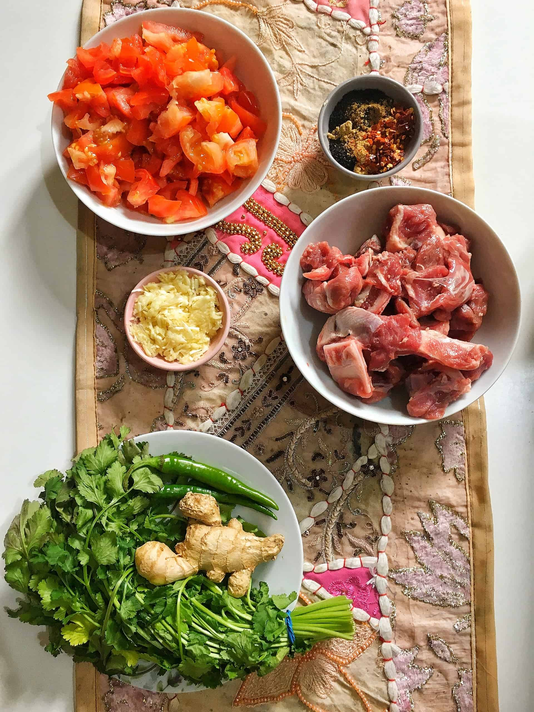
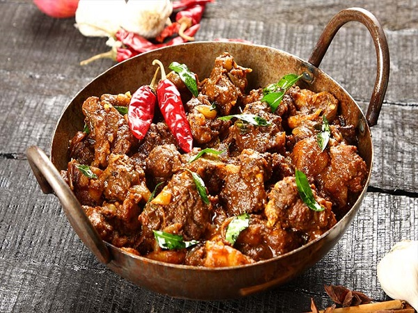

Mutton Karahi
There are some dishes in Pakistani cuisine that really don't need an introduction. Biryani, Pilau, Korma... they all speak for themselves. A delicious, well made mutton Karahi is also in this elite category.
Required Ingredients

- Meat (1/2 kg small cube)
- 500g tomatoes diced
- 2 tablespoons garlic (crushed)
- 1 tablespoon ginger paste
- 6-7 green chillies (whole)
- cilantro/fresh coriander
- 275 ml Oil
- 85g butter
- 1 packet of karahi mix masala (mixed in 1/2 cup of water)
Method

- Mix garlic, ginger paste and Karahi masala Mix. Apply to meat and marinate for (Mutton 1-2 hours +).
- Heat one cup oil and stir fry meat on high heat for 5-6 minutes. Add julienne ginger. Cover and cook on low heat until meat is tender (Mutton 45 minutes).
- Separately heat ½ cup oil and add tomatoes. Cook on low heat until soft (5-6 minutes). Stir periodically.
- Add cooked tomatoes and green chillies to the cooked meat. On medium heat stir-fry meat until oil separates from masala. Stir constantly. If desired remove excessive oil.
- Add fresh coriander and butter. Stir fry.
- Serve with hot Naans (bread)